Lab 3: Keypad Scanner
Introduction
The goal of this lab was to read a 4x4 matrix keypad with the FPGA and display the last two hexadecimal digits pressed on the dual seven-segment display from lab 2. I synchronized and debounced the keypad’s column inputs, designed a keypad scanner finite state machine (FSM) that registers each press exactly once and tolerates multiple simultaneous presses, and verified each new module and updated module with a self-checking testbench before testing the design on hardware.
Design and Testing Methodology
FPGA Implementation
The top-level module (lab3_zw) has the following inputs and outputs:
| Signal Name | Signal Type | Description |
|---|---|---|
rst_n |
input | active-low push button (internal pull-up) that resets the entire design |
kp_col_async[3:0] |
input | asynchronous, active-low keypad column inputs (internal pull-ups) |
seg[6:0] |
output | shared segment lines, time multiplexed between both digits |
an_en[1:0] |
output | anode enable outputs, exactly one high at a time to select the active digit |
kp_row[3:0] |
output | one-hot row output that scans the keypad |
Each column passes through a two-stage synchronizer and then a debouncer before reaching keypad_scanner. The synchronizers reset to 1, since the columns are active low and idle high. keypad_scanner drives the row scan, detects and decodes key presses, and holds the two most recent digits in digit0 (newest) and digit1. The display multiplexing is reused from lab 2, and the counter and seven_seg_decoder modules are reused from lab 1. Every register is clocked by the 48 MHz HSOSC output, and the slower scan, debounce, and multiplexing rates are generated with counters.
The keypad scanner’s 25-bit counter asserts each row for 6,000,000 cycles (125 ms). It only advances while the scanner is in its SCAN state and no debounced column is low, so the row stays fixed while a key is held. The driven row and the debounced columns are decoded together into a hexadecimal value, with the * and # keys displayed as F and E, respectively.
Finite State Machines
The design contains two canonical FSMs, the debouncer and the keypad scanner, each communicating with its own instantiated counter. Both route the unused encoding 2'b11 to their reset states through a default branch.
Keypad scanner. In SCAN, the rows are scanned while no key is down. When exactly one column reads low (single_key), the FSM moves to PRESS. If several columns read low, it stays in SCAN with the scan frozen and registers nothing. PRESS lasts one cycle and asserts load, which shifts digit0 into digit1, stores the decoded key in digit0, and records the pressed column in held_col. HOLD waits for every key to be released. Additional keys pressed during HOLD either produce a multi-column reading or, if they are in another row, are not visible at all, so they are ignored. If the reading changes to a different single column (new_col), as happens when all but one of several held keys are released, the FSM returns to PRESS and registers that key. A remaining key in a different row is registered once the scan resumes and reaches its row.
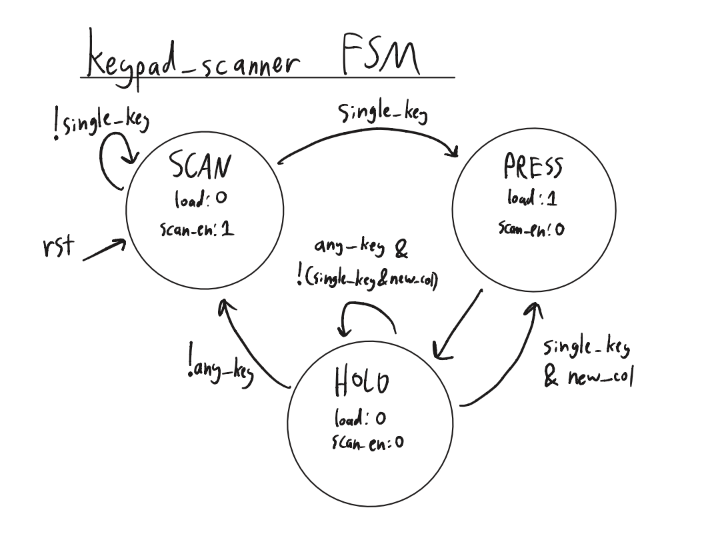
keypad_scanner.| Current State | any_key |
single_key |
new_col |
Next State |
|---|---|---|---|---|
| SCAN | X | 0 | X | SCAN |
| SCAN | X | 1 | X | PRESS |
| PRESS | X | X | X | HOLD |
| HOLD | 0 | X | X | SCAN |
| HOLD | 1 | 0 | X | HOLD |
| HOLD | 1 | 1 | 0 | HOLD |
| HOLD | 1 | 1 | 1 | PRESS |
| unused | X | X | X | SCAN |
| Current State | load |
scan_en |
|---|---|---|
| SCAN | 0 | !any_key |
| PRESS | 1 | 0 |
| HOLD | 0 | 0 |
| unused | 0 | 0 |
When load is asserted, the next clock edge loads digit0 <= key, digit1 <= digit0, and held_col <= kp_col. scan_en enables the row scan counter.
Debouncer. In IDLE, db_clr holds the debounce counter at zero. A low input moves the FSM to WAIT, where the counter runs. Any return high during WAIT is treated as a bounce and returns the FSM to IDLE, clearing the counter. Once db_count[19] is set, after \(2^{19}\) consecutive low cycles, the FSM enters PRESSED and drives btn_out low until the input returns high.
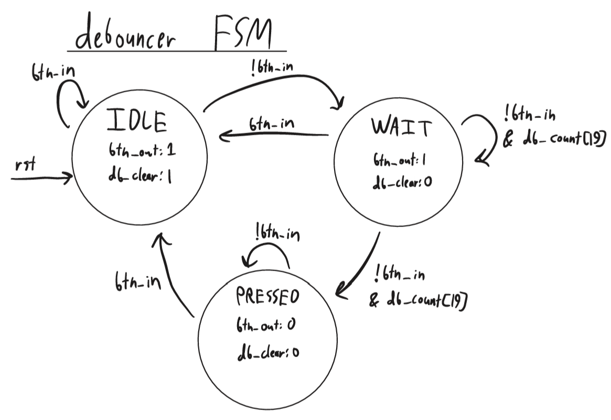
debouncer.| Current State | btn_in |
db_count[19] |
Next State |
|---|---|---|---|
| IDLE | 1 | X | IDLE |
| IDLE | 0 | X | WAIT |
| WAIT | 1 | X | IDLE |
| WAIT | 0 | 0 | WAIT |
| WAIT | 0 | 1 | PRESSED |
| PRESSED | 0 | X | PRESSED |
| PRESSED | 1 | X | IDLE |
| unused | X | X | IDLE |
| Current State | btn_out |
db_clr |
|---|---|---|
| IDLE | 1 | 1 |
| WAIT | 1 | 0 |
| PRESSED | 0 | 0 |
| unused | 1 | 0 |
Debouncing Strategy
Each column is debounced independently by its own debouncer, placed after the synchronizer so that it only sees synchronous inputs. A press is confirmed only after 10.9 ms of continuous low input, and releases are accepted immediately, since a release bounce shorter than 10.9 ms can only move the debouncer into WAIT. A single debounce timer shared by all columns and sequenced by the scanner FSM would use one counter instead of four, but it would couple the debounce timing to the scan logic and add states to the scanner. I chose per-column debouncers because they keep the scanner FSM simple and can be tested in isolation, at the cost of four 20-bit counters.
FSM Partitioning
The design is partitioned into communicating FSMs. Each debouncer’s FSM communicates with its counter through db_clr and db_count[19]. The four debounced columns (kp_col_db) are the only interface between the debouncers and keypad_scanner, whose FSM communicates with the scan counter through scan_en and receives kp_row from the counter’s output logic. The display multiplexing counter runs independently of both. Keeping the debouncing and scanning separate let me test each module on its own, at the cost of more modules and inter-module signals.
Testing
Each new module has a self-checking testbench. The synchronizer testbench verifies the two-cycle latency for rising, falling, edge-aligned, and non-edge-aligned inputs, as well as an asynchronous reset in the middle of a shift. The debouncer testbench covers every state transition, including a bounce that aborts WAIT, the exact debounce threshold, recovery from the unused state encoding, and an asynchronous reset while PRESSED. The keypad scanner testbench models the physical keypad, deriving kp_col from kp_row and an array of held keys. It verifies all four row boundaries, all 16 decodes, a 200-cycle hold that registers only once, and each of the multiple-key cases in the specification. The top-level testbench applies an active-low key press with switch bounce and transitions at arbitrary positions relative to int_osc, including one directly on a clock edge, then checks that the press is synchronized, debounced, decoded, and displayed. The long debounce and multiplexing waits are skipped by forcing the relevant counters to their thresholds so I could waveforms legible.
On hardware, I tested each of the 16 keys individually, held keys down, pressed additional keys while holding one, released multi-key presses down to a single key, and pressed several keys at once.
Technical Documentation
The source code for the project can be found in the associated Github repository.
Block Diagram
Figure 3 shows the top-level architecture of lab3_zw. HSOSC generates int_osc, which clocks every submodule. Each bit of kp_col_async[3:0] passes through its own synchronizer (sync0 through sync3) and debouncer (debounce0 through debounce3) to form kp_col_db[3:0], which feeds kp_scanner. kp_scanner drives kp_row[3:0] and outputs digit0 and digit1. As in lab 2, mux_count from mux_counter is compared against 16'd24,000 to select digit_out and an_en[1:0], and sev_seg_dec decodes digit_out onto seg[6:0]. rst_n is inverted for every submodule’s rst port.
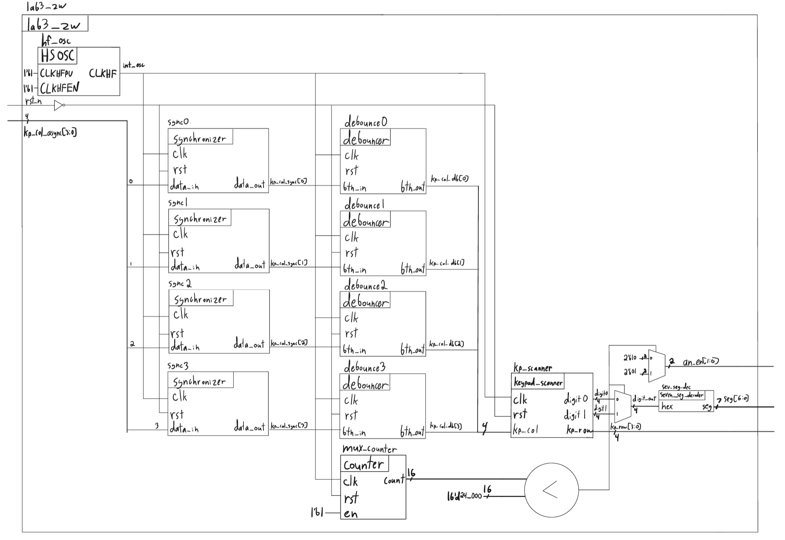
lab3_zw SystemVerilog design.Figure 4 shows keypad_scanner. A four-input NAND of kp_col produces any_key, four equality comparators feeding an OR gate produce single_key, and an inequality comparator against the held_col register produces new_col. These drive the FSM’s next state logic, and equality comparators on state generate load and scan_en. scan_en enables scan_cnt, whose count is compared against the three row boundaries to select kp_row[3:0] through a chain of multiplexers. The key decode logic combines kp_row and kp_col into key, which load shifts into the digit0 and digit1 registers.
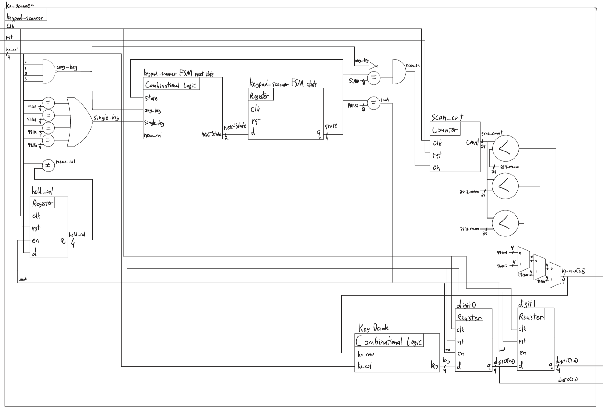
keypad_scanner SystemVerilog module.Figure 5 shows debouncer. The FSM’s next state logic uses btn_in and bit 19 of db_count. db_clr, the OR of rst and an equality comparison of state against IDLE, resets db_counter, whose enable is tied high, and btn_out is the inverted equality comparison of state against PRESSED.
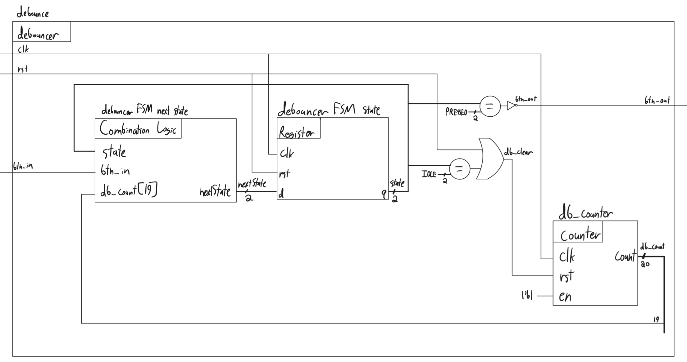
debouncer SystemVerilog module.Schematic
Figure 6 shows the schematic of the physical circuit. The display and keypad circuitry are unchanged from lab 2: each digit’s common anode is driven by a 2N3906 PNP transistor with an \(820\ \Omega\) base resistor, each shared segment cathode has a \(330\ \Omega\) current-limiting resistor, and each keypad row is driven through a 2N3904 NPN transistor wired as an open-collector output. The columns are read through the FPGA’s internal pull-ups, set to \(3.3\text{ k}\Omega\) (PULLMODE=3P3K) in the pin constraints. On-board components are documented in the development board schematic.
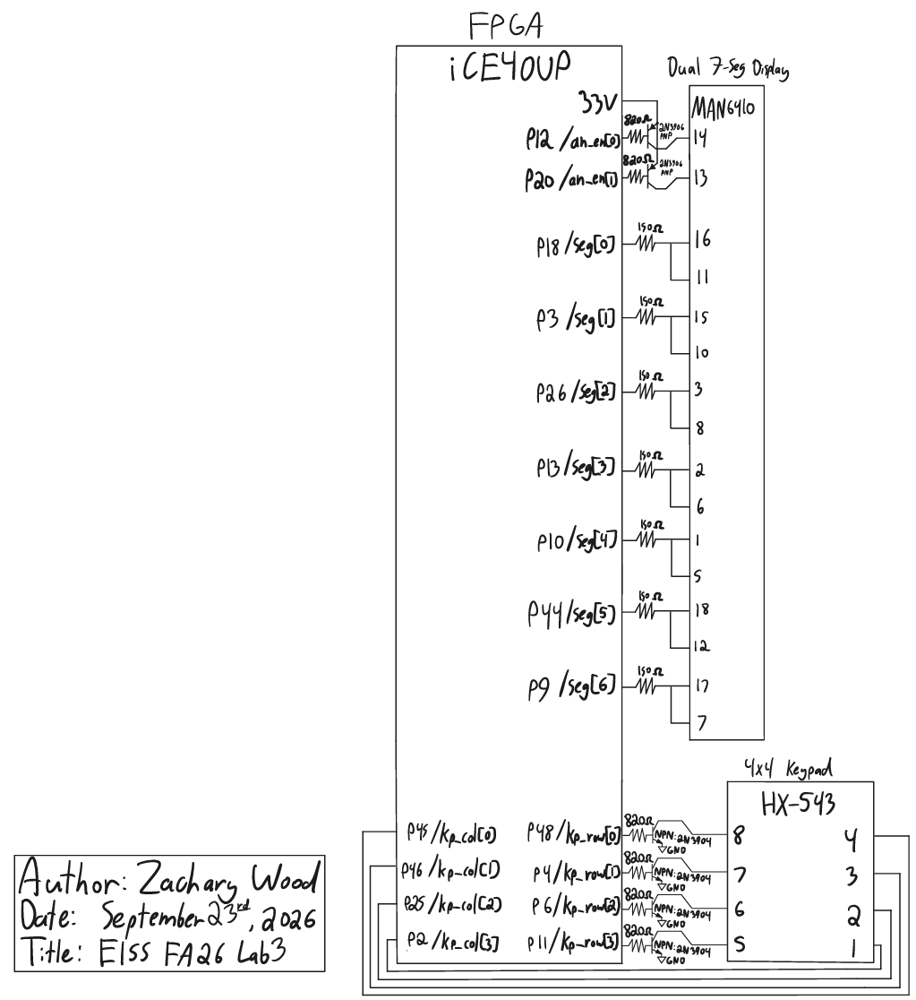
Calculations
Segment and base currents. The segment and base resistors are unchanged from lab 2, so each segment draws approximately 3.6 mA and each transistor base draws approximately 3.2 mA, both under the FPGA’s 8 mA maximum.
which the row transistor sinks to ground.
Debounce time. A press is confirmed once db_count[19] is set, after \(2^{19}\) cycles:
\[t_{db} = \frac{2^{19}}{48\times10^6\text{ Hz}} \approx 10.9\text{ ms}\]
Scan and multiplexing rates. As in lab 2, the scan counter (MAX = 25'd23_999_999) asserts each row for 6,000,000 cycles (125 ms), cycling through all four rows at 2 Hz, and the multiplexing counter (MAX = 16'd47_999) toggles the active digit every 24,000 cycles, resulting in a 1 kHz toggle rate between digits.
Synthesis Results
Figure 7 shows the area report from the Lattice Synthesis Engine. All 156 register bits are implemented as FD1P3XZ D flip-flops. The only I/O buffers are 5 input buffers (IB) and 13 output buffers (OB), one per port bit, so the design contains no latches and no tristate buffers.
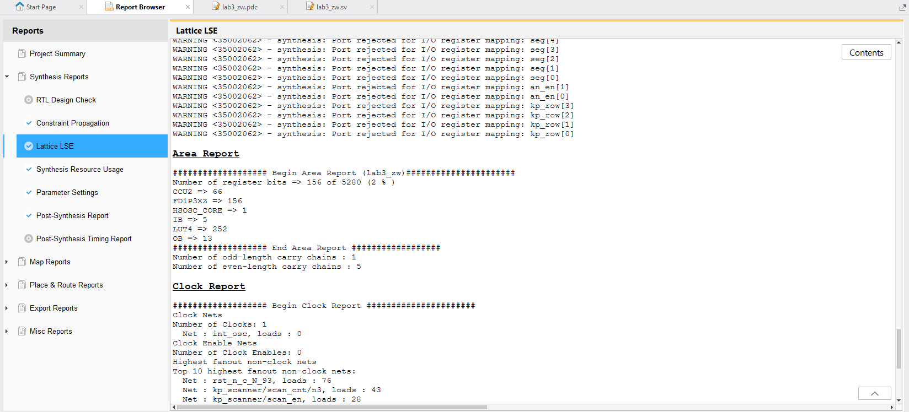
lab3_zw.Results and Discussion
This design meets all of the lab’s proficiency and excellence requirements in both simulation and hardware. Each key press is registered exactly once regardless of how long it is held, the display holds its current values while multiple keys are pressed, and releasing all but one key registers the remaining key.
The main limitation of the design is the 2 Hz scan rate carried over from lab 2. Because the scan only freezes once a column has been debounced, a key registers only if it is held while its row is driven for the full 10.9 ms debounce window, so a quick tap that begins just after its row was scanned must be held for up to about 386 ms. I could have addressed this two ways. First, the scan could run much faster while keeping each row’s dwell time longer than the debounce window, for example an 8 ms dwell with a 5.46 ms debounce window (db_count[18]), which reduces the worst-case hold time to about 35 ms. Second, the scan could freeze on the synchronized, pre-debounce columns (kp_col_sync) instead so that the row stays fixed while the debouncer runs. This would decouple the scan rate from the debounce time entirely, but would requires passing kp_col_sync into keypad_scanner as well.
Testbench Simulation
Figures 8 through 10 show the synchronizer, debouncer, and keypad scanner testbenches. Figure 11 shows the top-level testbench, and Figure 12 zooms in on the end of the top-level simulation. The counter and seven-segment decoder simulations were not repeated, since those modules were verified in lab 1.
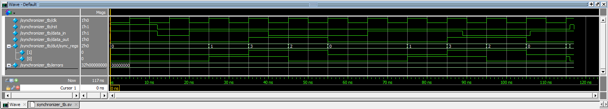
synchronizer_tb, showing the two-cycle latency for rising, falling, and edge-aligned inputs, and an asynchronous reset in the middle of a shift.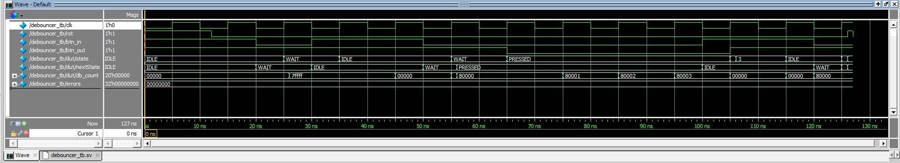
debouncer_tb, showing the IDLE, WAIT, and PRESSED transitions, a bounce returning to IDLE, confirmation at the debounce threshold, recovery from the unused state, and an asynchronous reset.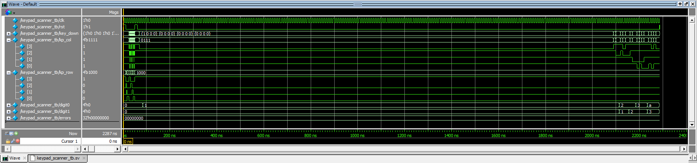
keypad_scanner_tb, showing the row boundaries, all 16 decodes, a long hold, and the multiple-key cases.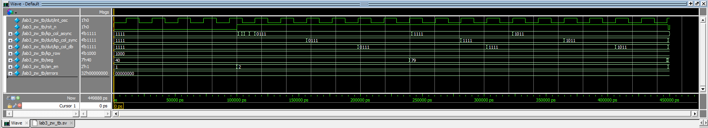
lab3_zw_tb, showing a bounced, asynchronous press of key 1 propagating to seg, followed by a press of key 2.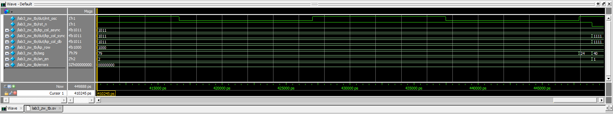
lab3_zw_tb, showing key 2 reaching seg during digit 0’s phase, followed by the asynchronous reset.Conclusion
The design scanned the 4x4 keypad, synchronized and debounced its inputs, and displayed the last two keys pressed, registering each press once and handling multiple simultaneous presses as specified.
I spent about 22 hours on this lab. For instructor refence, I spent 7 hours writing designing modules, 5 hours simulating my modules, 3 hours refactoring and debugging hardware, 4 hours on drawings (schematic, block diagram, FSMs), and 3 hours on the lab report
AI Prototype Summary
The purpose of the AI Prototype is to experiment with utilizing AI as a coding assistant, and analyze the quality, speed, and precision that an LLM can generate code.
Target device: Lattice iCE40 UP5K FPGA with internal high-speed oscillator (~20 MHz).
Write synthesizable SystemVerilog to scan a 4x4 matrix keypad and display the last two hex keys pressed on a dual 7-segment display. Implement:
- A clock divider that derives a scan clock on the order of 100-200 Hz from the internal oscillator.
- A keypad scanning controller that iterates one active-low column at a time and samples active-low rows, registering at most one key per press (debounce-by-design), ignoring additional presses while any key is held, and allowing a new registration only after release.
- A top level that updates two hex digits (older and most recent) when a new key is registered and drives a time-multiplexed two-digit 7-segment display without visible flicker and with balanced brightness.
Use idiomatic SystemVerilog (e.g., logic, always_ff, enumerated states for FSMs). Provide clean module boundaries and keep all state synchronous. Include brief comments explaining the design choices.
// ============================================================================
// 4x4 keypad scanner with two-digit multiplexed hexadecimal display
// Target: Lattice iCE40 UP5K, internal high-frequency oscillator (HSOSC)
// ============================================================================
// ----------------------------------------------------------------------------
// sync_2ff
// Two-flop synchronizer for asynchronous inputs. Bits are synchronized
// independently. Incoherence between bits is harmless here: any mix of old
// and new row values is itself a valid keypad state, and the scanner
// resolves it on a later scan.
// ----------------------------------------------------------------------------
module sync_2ff #(
parameter int unsigned WIDTH = 1
) (
input logic clk,
input logic [WIDTH-1:0] d,
output logic [WIDTH-1:0] q
);
logic [WIDTH-1:0] meta;
always_ff @(posedge clk) begin
meta <= d;
q <= meta;
end
endmodule
// ----------------------------------------------------------------------------
// tick_gen
// Produces a one-cycle enable pulse at TICK_HZ. An enable is used instead of
// a divided clock so that all registers remain in the single oscillator
// domain on the global clock network (no fabric-routed derived clock, no
// second clock domain, no clock-domain crossing).
// ----------------------------------------------------------------------------
module tick_gen #(
parameter int unsigned CLK_HZ = 24_000_000,
parameter int unsigned TICK_HZ = 200
) (
input logic clk,
input logic rst,
output logic tick
);
localparam int unsigned DIV = CLK_HZ / TICK_HZ;
localparam int unsigned CW = (DIV > 1) ? $clog2(DIV) : 1;
logic [CW-1:0] count;
always_ff @(posedge clk) begin
if (rst) begin
count <= '0;
tick <= 1'b0;
end else if (count == CW'(DIV - 1)) begin
count <= '0;
tick <= 1'b1;
end else begin
count <= count + 1'b1;
tick <= 1'b0;
end
end
endmodule
// ----------------------------------------------------------------------------
// keypad_scanner
// Drives one active-low column per scan tick and samples the active-low
// rows at the end of that column's dwell time.
//
// ARMED : the first active row found registers exactly one key
// (single-cycle key_valid pulse) and the FSM moves to LOCKED.
// LOCKED: scanning continues over all columns but nothing is registered.
// The FSM re-arms only after RELEASE_SCANS consecutive full scans
// with no active row, i.e. after every key has been released.
//
// Debounce by design: each key is sampled once per full scan (4 ticks,
// 20 ms at 200 Hz), which exceeds typical contact bounce. Press bounce is
// masked by the lock; release bounce is masked by requiring consecutive
// clean scans before re-arming. RELEASE_SCANS must be at least 1.
// ----------------------------------------------------------------------------
module keypad_scanner #(
parameter int unsigned RELEASE_SCANS = 2
) (
input logic clk,
input logic rst,
input logic scan_tick,
input logic [3:0] row_n,
output logic [3:0] col_n,
output logic key_valid,
output logic [3:0] key_code
);
typedef enum logic {
ARMED,
LOCKED
} state_t;
localparam logic [1:0] LAST_COL = 2'd3;
localparam int unsigned RW = (RELEASE_SCANS > 1) ?
$clog2(RELEASE_SCANS) : 1;
state_t state;
logic [1:0] col_idx;
logic [1:0] col_next;
logic [1:0] row_idx;
logic row_hit;
logic press_seen;
logic [RW-1:0] clean_scans;
// Key layout (row 0 at top, column 0 at left):
// 1 2 3 A
// 4 5 6 B
// 7 8 9 C
// E 0 F D (* maps to E, # maps to F)
function automatic logic [3:0] key_map(input logic [1:0] row,
input logic [1:0] col);
unique case ({row, col})
4'h0: return 4'h1;
4'h1: return 4'h2;
4'h2: return 4'h3;
4'h3: return 4'hA;
4'h4: return 4'h4;
4'h5: return 4'h5;
4'h6: return 4'h6;
4'h7: return 4'hB;
4'h8: return 4'h7;
4'h9: return 4'h8;
4'hA: return 4'h9;
4'hB: return 4'hC;
4'hC: return 4'hE;
4'hD: return 4'h0;
4'hE: return 4'hF;
4'hF: return 4'hD;
endcase
endfunction
assign col_next = col_idx + 2'd1;
assign row_hit = ~&row_n;
// Lowest-numbered active row wins if several rows are active.
always_comb begin
casez (row_n)
4'b???0: row_idx = 2'd0;
4'b??01: row_idx = 2'd1;
4'b?011: row_idx = 2'd2;
default: row_idx = 2'd3;
endcase
end
// --- Column sequencer ------------------------------------------------------
// col_n is registered and always equals the decode of col_idx, so at each
// tick the synchronized rows reflect the column driven for the full
// preceding dwell period.
always_ff @(posedge clk) begin
if (rst) begin
col_idx <= 2'd0;
col_n <= 4'b1110;
end else if (scan_tick) begin
col_idx <= col_next;
col_n <= ~(4'b0001 << col_next);
end
end
// --- Registration FSM ------------------------------------------------------
always_ff @(posedge clk) begin
if (rst) begin
state <= ARMED;
press_seen <= 1'b0;
clean_scans <= '0;
key_valid <= 1'b0;
key_code <= 4'h0;
end else begin
key_valid <= 1'b0;
if (scan_tick) begin
unique case (state)
ARMED: begin
if (row_hit) begin
state <= LOCKED;
key_valid <= 1'b1;
key_code <= key_map(row_idx, col_idx);
clean_scans <= '0;
// Mark the current partial scan as dirty so it cannot count
// toward release before the pressed column is re-sampled.
press_seen <= (col_idx != LAST_COL);
end
end
LOCKED: begin
if (col_idx == LAST_COL) begin
press_seen <= 1'b0;
if (press_seen || row_hit) begin
clean_scans <= '0;
end else if (clean_scans == RW'(RELEASE_SCANS - 1)) begin
state <= ARMED;
clean_scans <= '0;
end else begin
clean_scans <= clean_scans + 1'b1;
end
end else begin
press_seen <= press_seen | row_hit;
end
end
endcase
end
end
end
endmodule
// ----------------------------------------------------------------------------
// hex_to_seg
// Hexadecimal to seven-segment decoder. seg = {g, f, e, d, c, b, a},
// active high. Polarity for the physical display is applied at the top.
// ----------------------------------------------------------------------------
module hex_to_seg (
input logic [3:0] hex,
output logic [6:0] seg
);
always_comb begin
unique case (hex)
4'h0: seg = 7'b011_1111;
4'h1: seg = 7'b000_0110;
4'h2: seg = 7'b101_1011;
4'h3: seg = 7'b100_1111;
4'h4: seg = 7'b110_0110;
4'h5: seg = 7'b110_1101;
4'h6: seg = 7'b111_1101;
4'h7: seg = 7'b000_0111;
4'h8: seg = 7'b111_1111;
4'h9: seg = 7'b110_1111;
4'hA: seg = 7'b111_0111;
4'hB: seg = 7'b111_1100;
4'hC: seg = 7'b011_1001;
4'hD: seg = 7'b101_1110;
4'hE: seg = 7'b111_1001;
4'hF: seg = 7'b111_0001;
endcase
end
endmodule
// ----------------------------------------------------------------------------
// display_mux
// Time-multiplexes two digits over shared segment lines. Each digit owns an
// identical slot of SLOT_CYCLES clocks, so both digits receive the same duty
// cycle and therefore the same brightness. The first BLANK_CYCLES of every
// slot disable all digits and segments so the previous digit driver turns
// off completely before new segment data appears (prevents ghosting).
// SLOT_HZ = 1 kHz yields a 500 Hz refresh per digit, well above the flicker
// fusion threshold. Outputs are active high and registered.
// ----------------------------------------------------------------------------
module display_mux #(
parameter int unsigned CLK_HZ = 24_000_000,
parameter int unsigned SLOT_HZ = 1_000,
parameter int unsigned BLANK_DIV = 32
) (
input logic clk,
input logic rst,
input logic [3:0] hex_left,
input logic [3:0] hex_right,
output logic [6:0] seg,
output logic [1:0] digit_en
);
localparam int unsigned SLOT_CYCLES = CLK_HZ / SLOT_HZ;
localparam int unsigned BLANK_CYCLES = SLOT_CYCLES / BLANK_DIV;
localparam int unsigned CW = (SLOT_CYCLES > 1) ?
$clog2(SLOT_CYCLES) : 1;
logic [CW-1:0] count;
logic sel_left;
logic blank;
logic [6:0] seg_left;
logic [6:0] seg_right;
hex_to_seg u_seg_left (
.hex(hex_left),
.seg(seg_left)
);
hex_to_seg u_seg_right (
.hex(hex_right),
.seg(seg_right)
);
assign blank = (count < CW'(BLANK_CYCLES));
always_ff @(posedge clk) begin
if (rst) begin
count <= '0;
sel_left <= 1'b0;
end else if (count == CW'(SLOT_CYCLES - 1)) begin
count <= '0;
sel_left <= ~sel_left;
end else begin
count <= count + 1'b1;
end
end
always_ff @(posedge clk) begin
if (rst) begin
seg <= 7'b000_0000;
digit_en <= 2'b00;
end else if (blank) begin
seg <= 7'b000_0000;
digit_en <= 2'b00;
end else if (sel_left) begin
seg <= seg_left;
digit_en <= 2'b10;
end else begin
seg <= seg_right;
digit_en <= 2'b01;
end
end
endmodule
// ----------------------------------------------------------------------------
// keypad_display_top
// Displays the two most recently registered keys: older on the left digit
// (digit[1]), most recent on the right digit (digit[0]).
//
// Columns are driven open-drain (low or high-Z) so that two keys pressed in
// the same row cannot short a high column to a low column. Rows require
// pull-ups (internal I/O pull-ups or external resistors).
//
// CLK_HZ must match CLKHF_DIV: "0b00" = 48, "0b01" = 24, "0b10" = 12,
// "0b11" = 6 MHz (nominal).
// ----------------------------------------------------------------------------
module keypad_display_top #(
parameter int unsigned CLK_HZ = 24_000_000,
parameter int unsigned SCAN_HZ = 200,
parameter int unsigned SLOT_HZ = 1_000,
parameter int unsigned RELEASE_SCANS = 2,
parameter bit SEG_ACTIVE_LOW = 1'b1,
parameter bit DIGIT_ACTIVE_LOW = 1'b1
) (
input logic reset_n,
input logic [3:0] row_n,
output wire [3:0] col_n,
output logic [6:0] seg,
output logic [1:0] digit
);
logic clk;
logic reset_n_sync;
logic rst;
logic scan_tick;
logic [3:0] row_n_sync;
logic [3:0] col_n_drive;
logic key_valid;
logic [3:0] key_code;
logic [3:0] hex_old;
logic [3:0] hex_new;
logic [6:0] seg_on;
logic [1:0] digit_on;
// --- Clock and reset -------------------------------------------------------
HSOSC #(
.CLKHF_DIV("0b01")
) u_hfosc (
.CLKHFPU(1'b1),
.CLKHFEN(1'b1),
.CLKHF (clk)
);
sync_2ff #(
.WIDTH(1)
) u_rst_sync (
.clk(clk),
.d (reset_n),
.q (reset_n_sync)
);
assign rst = ~reset_n_sync;
// --- Keypad ----------------------------------------------------------------
sync_2ff #(
.WIDTH(4)
) u_row_sync (
.clk(clk),
.d (row_n),
.q (row_n_sync)
);
tick_gen #(
.CLK_HZ (CLK_HZ),
.TICK_HZ(SCAN_HZ)
) u_scan_tick (
.clk (clk),
.rst (rst),
.tick(scan_tick)
);
keypad_scanner #(
.RELEASE_SCANS(RELEASE_SCANS)
) u_scanner (
.clk (clk),
.rst (rst),
.scan_tick(scan_tick),
.row_n (row_n_sync),
.col_n (col_n_drive),
.key_valid(key_valid),
.key_code (key_code)
);
for (genvar i = 0; i < 4; i++) begin : g_col_open_drain
assign col_n[i] = col_n_drive[i] ? 1'bz : 1'b0;
end
// --- Key history -----------------------------------------------------------
always_ff @(posedge clk) begin
if (rst) begin
hex_old <= 4'h0;
hex_new <= 4'h0;
end else if (key_valid) begin
hex_old <= hex_new;
hex_new <= key_code;
end
end
// --- Display ---------------------------------------------------------------
display_mux #(
.CLK_HZ (CLK_HZ),
.SLOT_HZ(SLOT_HZ)
) u_display (
.clk (clk),
.rst (rst),
.hex_left (hex_old),
.hex_right(hex_new),
.seg (seg_on),
.digit_en (digit_on)
);
assign seg = SEG_ACTIVE_LOW ? ~seg_on : seg_on;
assign digit = DIGIT_ACTIVE_LOW ? ~digit_on : digit_on;
endmodulePrompt 1. Target device: Lattice iCE40 UP5K FPGA.
Overall Goal: Write SystemVerilog to scan a 4x4 matrix keypad and display the last two hex keys pressed on a dual 7 segment display.
Current Goal: Write a synthesizable SystemVerilog module that produces a one-shot registration signal for the keypad system. Behavior:
- When a key press is first detected, capture the current key code and assert a single-cycle “new key” pulse.
- While any key remains pressed, do not accept additional keys.
- Only after keys are released should a subsequent press be recognized.
- This should handle debouncing of the keys.
Implement as a small synchronous FSM with enumerated states and glitch-free outputs. Keep names and interfaces reasonable; do not assume any hidden modules beyond what you define here.
Prompt 2. Target device: Lattice iCE40 UP5K FPGA.
Write a synthesizable SystemVerilog module that cycles through keypad columns (active-low, one at a time) and samples rows (active-low) to detect a single key at a time. Behavior:
- Iterate columns at a suitable scan rate derived from the divided clock and sample rows.
- When a key is detected, report a stable key code consistent with a standard 4x4 keypad layout and maintain it while the key remains pressed.
- Provide a boolean signal indicating whether any key is currently pressed.
Use clean state encoding and synchronous logic; avoid combinational feedback and latches.
Prompt 3. Target device: Lattice iCE40 UP5K FPGA with internal oscillator as the root clock source.
Write a top-level SystemVerilog module that instantiates the scanner and one-shot modules, shifts the last two keys (older <- most recent; most recent <- new), and drives a multiplexed two-digit seven-segment display. Requirements:
- Update the displayed digits only when a new key is registered.
- Ensure equal apparent brightness and no visible flicker.
- Keep all logic synthesizable and synchronous; use idiomatic SystemVerilog constructs.
- Provide any small clock-enable or divider logic you need. You can also assume that a sevenSegment module exists that takes a 4 bit input and outputs the 7 segments.
After the third prompt, I gave the LLM my seven_seg_decoder module, and it updated the top level to instantiate it with its actual ports.
// ============================================================================
// keypad_oneshot
//
// Debounces the key-press indication from a 4x4 keypad scanner and emits a
// single-cycle new_key pulse for each accepted press. key_pressed must remain
// asserted for as long as any key is held; key_code must identify that key
// while key_pressed is asserted. Both inputs are synchronized internally.
// ============================================================================
module keypad_oneshot #(
parameter int CLK_HZ = 24_000_000,
parameter int DEBOUNCE_MS = 20
) (
input logic clk,
input logic rst_n,
input logic key_pressed,
input logic [3:0] key_code,
output logic new_key,
output logic [3:0] key_out
);
// ------------------------------------------------------------------------
// Debounce interval
// ------------------------------------------------------------------------
localparam int DB_CYCLES_RAW = (CLK_HZ / 1000) * DEBOUNCE_MS;
localparam int DB_CYCLES = (DB_CYCLES_RAW < 1) ? 1 : DB_CYCLES_RAW;
localparam int CNT_W = $clog2(DB_CYCLES + 1);
localparam logic [CNT_W-1:0] CNT_MAX = CNT_W'(DB_CYCLES - 1);
// ------------------------------------------------------------------------
// Input synchronizer
// ------------------------------------------------------------------------
logic [4:0] sync_meta;
logic [4:0] sync_q;
logic pressed;
logic [3:0] code;
always_ff @(posedge clk) begin
sync_meta <= {key_pressed, key_code};
sync_q <= sync_meta;
end
assign pressed = sync_q[4];
assign code = sync_q[3:0];
// ------------------------------------------------------------------------
// State machine
// ------------------------------------------------------------------------
typedef enum logic [1:0] {
S_IDLE,
S_PRESS_DB,
S_HELD,
S_RELEASE_DB
} state_t;
state_t state;
state_t state_next;
logic [CNT_W-1:0] cnt;
logic [3:0] cand;
logic cnt_done;
logic code_changed;
logic restart;
logic accept;
assign cnt_done = (cnt == CNT_MAX);
assign code_changed = (code != cand);
assign restart = (state == S_PRESS_DB) && code_changed;
assign accept = (state == S_PRESS_DB) && (state_next == S_HELD);
always_comb begin
state_next = state;
case (state)
S_IDLE: begin
if (pressed) state_next = S_PRESS_DB;
end
S_PRESS_DB: begin
if (!pressed) state_next = S_IDLE;
else if (!code_changed && cnt_done) state_next = S_HELD;
end
S_HELD: begin
if (!pressed) state_next = S_RELEASE_DB;
end
S_RELEASE_DB: begin
if (pressed) state_next = S_HELD;
else if (cnt_done) state_next = S_IDLE;
end
default: state_next = S_IDLE;
endcase
end
always_ff @(posedge clk) begin
if (!rst_n) begin
state <= S_IDLE;
cnt <= '0;
cand <= '0;
new_key <= 1'b0;
key_out <= '0;
end else begin
state <= state_next;
new_key <= accept;
if (accept) key_out <= cand;
if (state_next != state || restart) begin
cnt <= '0;
end else if (state == S_PRESS_DB || state == S_RELEASE_DB) begin
cnt <= cnt + 1'b1;
end
if (state == S_IDLE || restart) cand <= code;
end
end
endmodule
// ============================================================================
// keypad_scanner
//
// Scans a 4x4 matrix keypad by driving one active-low column at a time and
// sampling the active-low rows. When exactly one row is active in the driven
// column, the column is held and the key code is reported until that row is
// released. rows_n[0] is the top row and cols_n[0] is the leftmost column.
// The rows require pull-ups.
//
// Layout:
// 1 2 3 A
// 4 5 6 B
// 7 8 9 C
// E 0 F D
// ============================================================================
module keypad_scanner #(
parameter int CLK_HZ = 24_000_000,
parameter int COL_RATE_HZ = 1_000
) (
input logic clk,
input logic rst_n,
input logic [3:0] rows_n,
output logic [3:0] cols_n,
output logic key_pressed,
output logic [3:0] key_code
);
// ------------------------------------------------------------------------
// Column tick
// ------------------------------------------------------------------------
localparam int MIN_DIV = 4;
localparam int DIV_RAW = CLK_HZ / COL_RATE_HZ;
localparam int DIV = (DIV_RAW < MIN_DIV) ? MIN_DIV : DIV_RAW;
localparam int DIV_W = $clog2(DIV + 1);
localparam logic [DIV_W-1:0] DIV_MAX = DIV_W'(DIV - 1);
logic [DIV_W-1:0] div_cnt;
logic tick;
assign tick = (div_cnt == DIV_MAX);
always_ff @(posedge clk) begin
if (!rst_n) div_cnt <= '0;
else if (tick) div_cnt <= '0;
else div_cnt <= div_cnt + 1'b1;
end
// ------------------------------------------------------------------------
// Row synchronizer and decode
// ------------------------------------------------------------------------
logic [3:0] rows_meta;
logic [3:0] rows_sync;
logic [3:0] row_hit;
logic [1:0] row_sel;
logic row_single;
always_ff @(posedge clk) begin
rows_meta <= rows_n;
rows_sync <= rows_meta;
end
assign row_hit = ~rows_sync;
always_comb begin
row_sel = 2'd0;
row_single = 1'b1;
case (row_hit)
4'b0001: row_sel = 2'd0;
4'b0010: row_sel = 2'd1;
4'b0100: row_sel = 2'd2;
4'b1000: row_sel = 2'd3;
default: row_single = 1'b0;
endcase
end
// ------------------------------------------------------------------------
// Key map
// ------------------------------------------------------------------------
function automatic logic [3:0] key_lut(input logic [1:0] row,
input logic [1:0] col);
key_lut = 4'h0;
case ({row, col})
4'b00_00: key_lut = 4'h1;
4'b00_01: key_lut = 4'h2;
4'b00_10: key_lut = 4'h3;
4'b00_11: key_lut = 4'hA;
4'b01_00: key_lut = 4'h4;
4'b01_01: key_lut = 4'h5;
4'b01_10: key_lut = 4'h6;
4'b01_11: key_lut = 4'hB;
4'b10_00: key_lut = 4'h7;
4'b10_01: key_lut = 4'h8;
4'b10_10: key_lut = 4'h9;
4'b10_11: key_lut = 4'hC;
4'b11_00: key_lut = 4'hE;
4'b11_01: key_lut = 4'h0;
4'b11_10: key_lut = 4'hF;
4'b11_11: key_lut = 4'hD;
default: key_lut = 4'h0;
endcase
endfunction
// ------------------------------------------------------------------------
// State machine
// ------------------------------------------------------------------------
typedef enum logic {
S_SCAN,
S_HOLD
} state_t;
state_t state;
state_t state_next;
logic [1:0] col_idx;
logic [1:0] col_next;
logic [1:0] row_idx;
logic row_held;
logic acquire;
assign col_next = col_idx + 2'd1;
assign row_held = ~rows_sync[row_idx];
assign acquire = (state == S_SCAN) && (state_next == S_HOLD);
always_comb begin
state_next = state;
case (state)
S_SCAN: begin
if (tick && row_single) state_next = S_HOLD;
end
S_HOLD: begin
if (tick && !row_held) state_next = S_SCAN;
end
default: state_next = S_SCAN;
endcase
end
always_ff @(posedge clk) begin
if (!rst_n) begin
state <= S_SCAN;
col_idx <= 2'd0;
cols_n <= 4'b1110;
row_idx <= 2'd0;
key_code <= 4'h0;
key_pressed <= 1'b0;
end else begin
state <= state_next;
key_pressed <= (state_next == S_HOLD);
if (acquire) begin
row_idx <= row_sel;
key_code <= key_lut(row_sel, col_idx);
end
if (tick && state_next == S_SCAN) begin
col_idx <= col_next;
cols_n <= ~(4'b0001 << col_next);
end
end
end
endmodule
// ============================================================================
// keypad_top
//
// Scans a 4x4 keypad, registers each debounced key press, and shows the two
// most recent keys on a multiplexed two-digit seven-segment display. The left
// digit shows the older key and the right digit shows the most recent key.
// Segments (seg[6:0] = gfedcba) and digit enables are active-low.
// ============================================================================
module keypad_top (
input logic reset_n,
input logic [3:0] rows_n,
output logic [3:0] cols_n,
output logic [6:0] seg,
output logic [1:0] digit_en_n
);
// ------------------------------------------------------------------------
// Clock
// ------------------------------------------------------------------------
localparam int CLK_HZ = 24_000_000;
logic clk;
HSOSC #(
.CLKHF_DIV("0b01")
) u_hsosc (
.CLKHFPU(1'b1),
.CLKHFEN(1'b1),
.CLKHF (clk)
);
// ------------------------------------------------------------------------
// Reset synchronizer
// ------------------------------------------------------------------------
logic [1:0] rst_sync;
logic rst_n;
always_ff @(posedge clk) begin
rst_sync <= {rst_sync[0], reset_n};
end
assign rst_n = rst_sync[1];
// ------------------------------------------------------------------------
// Keypad scanning and key registration
// ------------------------------------------------------------------------
logic key_pressed;
logic [3:0] key_code;
logic new_key;
logic [3:0] key_out;
keypad_scanner #(
.CLK_HZ (CLK_HZ),
.COL_RATE_HZ(1_000)
) u_scanner (
.clk (clk),
.rst_n (rst_n),
.rows_n (rows_n),
.cols_n (cols_n),
.key_pressed(key_pressed),
.key_code (key_code)
);
keypad_oneshot #(
.CLK_HZ (CLK_HZ),
.DEBOUNCE_MS(20)
) u_oneshot (
.clk (clk),
.rst_n (rst_n),
.key_pressed(key_pressed),
.key_code (key_code),
.new_key (new_key),
.key_out (key_out)
);
// ------------------------------------------------------------------------
// Key history
// ------------------------------------------------------------------------
logic [3:0] digit_recent;
logic [3:0] digit_older;
always_ff @(posedge clk) begin
if (!rst_n) begin
digit_recent <= 4'h0;
digit_older <= 4'h0;
end else if (new_key) begin
digit_older <= digit_recent;
digit_recent <= key_out;
end
end
// ------------------------------------------------------------------------
// Display multiplexing
// ------------------------------------------------------------------------
localparam int MUX_HZ = 1_000;
localparam int BLANK_US = 10;
localparam int BLANK_RAW = (CLK_HZ / 1_000_000) * BLANK_US;
localparam int BLANK_CYC = (BLANK_RAW < 1) ? 1 : BLANK_RAW;
localparam int SLOT_RAW = CLK_HZ / MUX_HZ;
localparam int SLOT_CYC = (SLOT_RAW > BLANK_CYC) ? SLOT_RAW
: BLANK_CYC + 1;
localparam int SLOT_W = $clog2(SLOT_CYC + 1);
localparam logic [SLOT_W-1:0] SLOT_MAX = SLOT_W'(SLOT_CYC - 1);
localparam logic [SLOT_W-1:0] BLANK_END = SLOT_W'(BLANK_CYC);
logic [SLOT_W-1:0] slot_cnt;
logic digit_sel;
logic blank;
logic [3:0] digit_val;
logic [6:0] seg_raw;
assign blank = (slot_cnt < BLANK_END);
assign digit_val = digit_sel ? digit_older : digit_recent;
always_ff @(posedge clk) begin
if (!rst_n) begin
slot_cnt <= '0;
digit_sel <= 1'b0;
end else if (slot_cnt == SLOT_MAX) begin
slot_cnt <= '0;
digit_sel <= ~digit_sel;
end else begin
slot_cnt <= slot_cnt + 1'b1;
end
end
seven_seg_decoder u_seven_seg (
.hex(digit_val),
.seg(seg_raw)
);
always_ff @(posedge clk) begin
seg <= seg_raw;
end
always_ff @(posedge clk) begin
if (!rst_n) digit_en_n <= 2'b11;
else if (blank) digit_en_n <= 2'b11;
else digit_en_n <= digit_sel ? 2'b01 : 2'b10;
end
endmoduleReflection: Prototype A synthesized in Lattice Radiant without errors, and Prototype B synthesized without errors once the LLM matched the top level to my decoder’s ports. Prototype A split the design into six modules (a synchronizer, a clock-enable generator, the scanner FSM, a decoder, a display multiplexer, and a top level), which is a reasonable split. I don’t like that it was all in one file, but it was convenient for copying things over. Its debounce approach registers a key on the first scan sample that shows contact and captures after two consecutive clean scans, which could be a clever approach. Prototype B produced a time-based debouncer (a four-state FSM with a 20 ms counter) and a scanner that stops on a held key, which is closer to my design. However, because each module was written before the next one existed, the one-shot module re-synchronizes signals that the scanner had already synchronized.
Both prototypes share the same problems regarding the lab 3 specs. Following the prompts, both ignore every key until all keys are released, so neither registers the last held key when leaving a multi-key press. Both update a counter in the same always_ff block as the FSM’s state register (A’s clean_scans and B’s cnt), which the specs prohibit, and Prototype A drives its columns open-drain with 1'bz, which should infer tristate buffers. Both also drive columns and read rows instead of vice versa, assume the FPGA drives the keypad directly rather than through open-collector transistors, and map * and # to E and F, the reverse of my design. I think that’s probably what most people, but I liked the letters being in order going clockwise.
Modularizing the prompts made each module easier to read and verify on its own, but it didn’t really improve correctness or the success of synthesis since the monolithic prompt was already modularized. Next time, I would give the LLM the lab specification and my hardware constraints (transistor row drivers, no latches, no embedded counters, and any of my existing modules) with my original prompt, as described in lab 2.